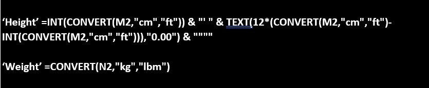
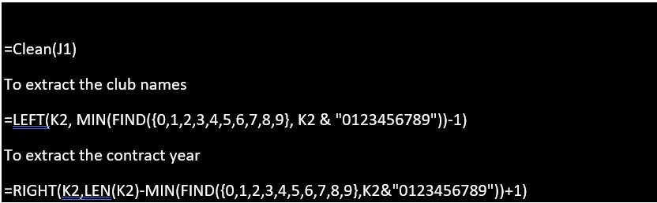

Introduction
In this project I will be going through the analysis of FIFA soccer players and their statistics. I will be primarily focusing on the data cleaning and transformation aspect for data analysis and why it is so important for further analysis.
Statement of business task
When a Data Analyst receives a dataset, it is imperative that one of the first objectives is to go through and ensure the dataset is clean and appropriate to use for further analysis. Using the dataset ‘FIFA Players and their rankings for 2021’ listed on Kaggle, I will be able to guide you on what I found to be unclean data and how I was able to clean and transform this dataset. Using Excel I will be able to go through how I can separate the 'joined' columns, change some formatted cells into integers, remove the new line characters from the 'Hits' Column and my thinking on how I separated the Team & contract column into separate columns.
Preparing the data
- In this analysis I am using the data FIFA 21 messy, raw dataset for cleaning/ exploring, by Rachit Toshniwal on Kaggle.
- It is CC0: Public domain License, user had waived right to work under copyright law.
- Contains Data on 18979 FIFA players Data on their rankings across various metrics such as Player name, Nationality, Height, Weight, Value, Wage, attacking, Skill etc.
- Dataset has 2 files in CSV format organized in Wide format.
ROCCC Analysis
- Reliability : HIGH – dataset was collected from 18979 FIFA football players that play professional soccer.
- Originality : LOW – third party data collected from sofifa.com meaning the originality is low.
- Comprehensive : HIGH – Contains a very comprehensive dataset using multiple columns on Players statistics.
- Current : MEDIUM – data is 2/3 years old meaning some of the players on this list may have retired or statistics could have changed from year it was posted.
- Cited : HIGH – data collector and source is well documented.
Data Selection
The focus here is to clean and transform the datasets that we have downloaded. There are only two datasets for this project and they are named:
Processing the Data
The tool I am using for this project is Excel. I could use a programming language like Python in this case however as this is the first project I want to keep this to a base level and incorporate more tools in other projects.
Data Cleaning
How I analyse my data for data cleaning and Transformation is as follows in this step by step guide:
- First, I download the dataset from Kaggle, unzip the files and I store it in a folder titled ‘FIFA 21 players Dataset’. To ensure I am adhering to the Data Analysis best practices I need to rename one of the excel files from ‘fifa21 raw data v2’ to ‘fifa21_raw_data_v2’ and ‘fifa21_raw_data’ to ‘fifa21_raw_data_v1’.
- I open both csv files into Microsoft excel and look through the data that has been provided to me scanning for any errors, blank fields or duplicates.
- I want to check that the height and weight columns are using the appropriate data types. The first thing I do apply the filter icon to the first row on both the datasets and I can see that v1 of the dataset is clean as the Height and Weight are grouped in feet and lbs. V2 however is grouped as feet/cm and lbs/kg. I need to clean this, so it is similar to the v1 file and in order to do this I create two new columns and enter the following example formula: 
- I then Separate the joined column into year, month and day columns you can use the text to columns function in the data tab. Open to new columns to the right of the joined column the file type will be delimited and check the comma and space and press finish and rearrange the tabs to day, month, year if necessary. Do this for V1 and V2 sheets.
- Next, I notice that I need to clean/ transform value, wage and release clause into columns of integers as there is unnecessary values “€”. I remove these using the find and replace function in the home tab. I input the value I want to take out in the find what field and replace it with a space in the replace with field and press Replace all. Do this for V1 and V2 sheets.
- I found that the is a Line break in the hit column, to clean this I select the entire column and I again use the find and replace function. In the find what field I press CTRL + J and in the replace with leave empty and then hit replace all. Only necessary for V1 dataset.
- On the V1 dataset the team and contract column should be separated as it might be handy if we wanted to understand if there were correlations or causations to players based on their club or contract length. We can separate this using the clean formula which will remove the line breaks from the cells: 
I apply this to all the rows, and this should clean the height and weight data for this particular section.
Conclusion
In Conclusion I have Cleaned and Transformed the data provided to me by appropriating the Height and weight data types, separated the Joined column, Cleaned columns into integers, removed new line characters and separated columns. As stated this is highly important for data analysis early on as it is important in order to avoid running into any issues further into the data analysis processes.
- © Data Cleaning